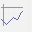
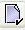
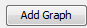
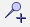
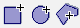
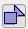

| Time Series Analysis Tool | |
The Time Series Analysis ToolView allows you to graph several points across different products.
For products such as SMOS L2, you may open several overlapping products and compare the same point across all opened products. For SAR products, you may create a coregistered stack and compare the same point across all bands of the stack.
Note: For products with inaccurate georeferencing, the products should
be coregistered first to ensure that pixels for the same location are
being compared.
Use the Product Library to select overlapping data sets over the desrired time range.

Left click on the world map to draw your geographic area of interest. Select the desired pass from either ascending or descending. In the search results table you can select the products to open.
Right click on the table and you may choose Select All from the popup menu and then press Open Selected.

Click on the Time Series Analysis button  on the main toolbar to open the toolview.
In the Time Series Analysis window, press the  button
to configure your graphs using the Time Series Analysis Settings Screen (see Figure 7).
Right click on the empty table row for Graph 1 and choose Paste to populate the table with the SMOS products selected from the Product Library.
Press the  button
on the upper left side to add a new graph table and repeat adding products to this graph.
Click on the colour control (above Rename) to select a
new colour for that line graph.
Select a product to be the reference product and open a band from this product.
As you move your mouse along the image view of the band, the Time Series Analaysis will generate a graph for the values across all products with the same named band at the current cursor location. If a product does not have a valid value for that location, it will be left empty.

To create a static graph at fixed positions, add a pin  to the reference image. In the Time Series, press the show all pins button to show the graph at the pin location. You may add more pins to create more graphs.
Use the Pin Manager to add specific pins at particular latitude/longitude coordinates of interest.
You may also create graphs based on averaged areas using vector drawings. Draw a new vector region of interest on the reference image using the add vector buttons  and by clicking and dragging the mouse on the image.
In the Time Series Analysis, press the show averaged vector button . For each data point in the graph, it will now use the average of all valid values within the vector.
To export the data from the Time Series Analysis, press the export button  to save the data points to CSV format.
to save the data points to CSV format.